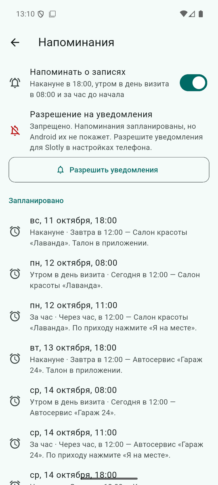
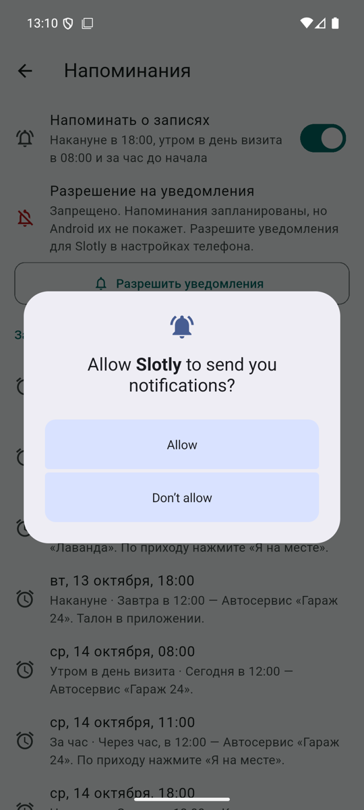
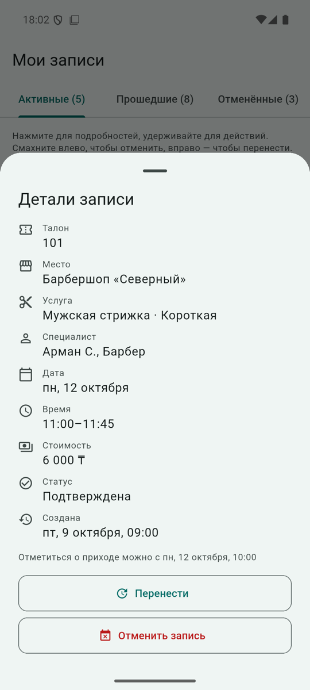

Локальные напоминания
Клиент получает напоминания о своих записях. Их планирует само приложение на телефоне — без сервера и без Firebase.
Напоминания — не push-уведомления. Push отправляет сервер (например, через FCM), и он доходит до любого устройства пользователя. Локальное напоминание запланировано на этом телефоне: оно не придёт на другое устройство, пропадёт после переустановки приложения и не узнает об изменении записи, сделанном не в этом приложении. В интерфейсе используется слово «напоминания».
Когда приходят
| Напоминание | Время | Условие |
|---|---|---|
| Накануне | 18:00 предыдущего дня | если момент ещё не прошёл |
| В день визита | 08:00 | только если это раньше напоминания «за час» (для визита в 09:00 оно бы его дублировало) |
| За час | начало визита − 1 час | если момент ещё не прошёл |
Отменённые, завершённые и уже отмеченные («Я на месте») записи напоминаний не получают. Время — локальное время устройства с учётом правил часового пояса (timezone + flutter_timezone), поэтому переход на летнее время не сдвигает 18:00.
Как синхронизируются
ReminderPlanner(чистый Dart) вычисляет список напоминаний для записей и детерминированные id: FNV-1a-хеш id записи × 4 + вид напоминания. Повторное планирование заменяет напоминание с тем же id, а не дублирует его.ReminderCoordinatorпосле каждого изменения записей (создание, перенос, отмена, «Я на месте»), входа, выхода и переключения настройки отменяет все напоминания и планирует актуальный список. У клиента несколько предстоящих записей, поэтому полная синхронизация дешёвая и исключает «осиротевшие» напоминания отменённых записей.- При выходе из аккаунта все напоминания отменяются; у владельцев их нет.
ReminderService— интерфейс; на устройстве —LocalReminderService(flutter_local_notifications), в тестах —InMemoryReminderService. Если плагин не инициализировался, приложение работает с заглушкой и показывает статус «Запрещено».- Касание напоминания открывает вкладку «Записи» и детали этой записи — и когда приложение уже запущено, и когда напоминание его запустило.
Разрешения Android
POST_NOTIFICATIONS— на Android 13+ система показывает диалог. Кнопка «Разрешить уведомления» на экране «Напоминания»; при отказе — понятный текст и инструкция открыть настройки.RECEIVE_BOOT_COMPLETED— восстановить запланированные напоминания после перезагрузки.- Разрешение на точные будильники (
SCHEDULE_EXACT_ALARM) не запрашивается: используется режимinexactAllowWhileIdle. Плата за это — см. «Ограничения».
Экран «Напоминания»





Профиль → «Напоминания о записях»: переключатель, статус разрешения, список запланированных напоминаний и число напоминаний, реально стоящих в планировщике Android. Список — одновременно инструмент ручной проверки.
Ручная проверка (выполнена 10 октября 2026, эмулятор API 36)
- Войти как
damir / damir-demo, открыть Профиль → «Напоминания о записях», нажать «Разрешить уведомления» → «Allow». Статус «Разрешено», в списке три напоминания на ближайшую запись. - Свернуть приложение. Перевести часы эмулятора на минуту раньше первого напоминания:
adb root adb shell settings put global auto_time 0 adb shell date 101117592026.40 # 11.10.2026 17:59:40 - Через 1–2 минуты в шторке появилось «Запись: Мужская стрижка — Завтра в 11:00 — Барбершоп «Северный». Талон в приложении.»
- Касание открыло приложение на деталях записи с талоном 101.
adb shell dumpsys alarm | grep kz.slotlyпоказал оставшиеся напоминания на 08:00 и 10:00 следующего дня.- Вернуть время:
adb shell settings put global auto_time 1. - Перенос и отмена записи: после переноса старые моменты пропадают из списка, новые появляются; после отмены напоминаний записи нет (также автоматизировано: интеграционный сценарий 7 и
reminder_coordinator_test.dart).
Ограничения
- Неточное время. В
dumpsys alarmу напоминаний окно доставки до +1 часа. На эмуляторе напоминание пришло через ~2 минуты, но в режиме экономии Android может доставить «за час» почти к началу визита. Варианты для production: точный будильник для одного напоминания «за час» с запросомSCHEDULE_EXACT_ALARMили серверный push. - Изменения, сделанные владельцем, не дойдут до клиента, пока клиент не откроет приложение (нет сервера).
- После переустановки или очистки данных напоминания пропадают вместе с данными.
Production (фаза B)
- FCM и серверный планировщик (Celery beat или аналог) с задачами на каждое напоминание.
- Хранение device token на сервере с привязкой к пользователю, обновление токена при ротации, удаление при выходе.
- Идемпотентные задачи с повтором при сбое доставки и ключом «запись + вид напоминания».
- Уведомления об изменении записи владельцем, о переносе и об отмене.
- Доставка на все устройства пользователя, в том числе после переустановки.
- Метрики доставки и открытий, журнал ошибок отправки.